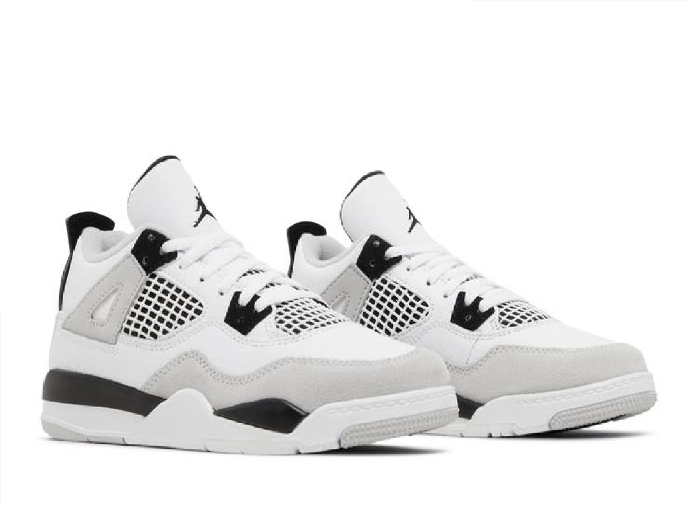
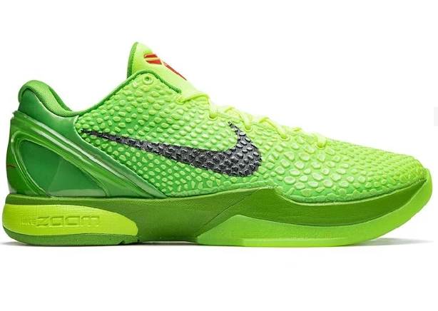

Kyrie 8 infinity Fire And IceEU:42-46 os méretbenEgység ára:50.340ftA Nike Kyrie Infinity „Fire and Ice” felfrissíti Kyrie Irving jellegzetes cipőjét, nem egyforma színű csíkkal a cipő elején , amelyek tükrözik a cipő kettősségi témáját.Anyagai: szövet/gumi/szövet See Market |

Jordan 4 Military BlackEU:40-44es méretben200.000ft tól-240.000ft igMichael Jordan 1985-ben viselte az első Air Jordan párost egy NBA-meccsen, amikor éppen a Chicago Bullsban kezdett játszani. Anyagai: velúr/szövet/gumi/szövet See Market |

Nike Kobe 6 Protro (Grinch)EU:40-44es méretben320.000ft tól-410.000ft igA Nike Zoom Kobe 6 Protro „Grinch” egy kedvelt színvilágot hoz vissza, amelyet eredetileg 2010-ben adtak ki a Nike Basketball Christmas Day Collection részeként.Anyagai: Poliuretán/poliészter/gumi See Market |